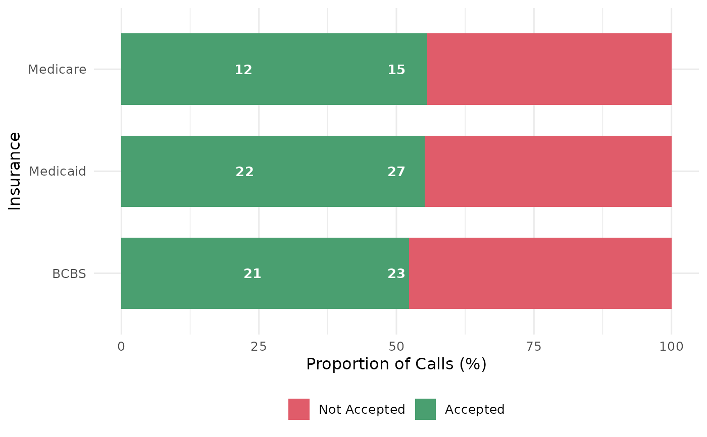

Stacked bar chart of appointment acceptance by group
Source:R/plot_stacked_bar.R
mysterycall_plot_stacked_bar.RdSummarises a binary 0/1 outcome column by a grouping variable and draws a
100-percent stacked bar chart using ggplot2. Groups are laid out
horizontally (via ggplot2::coord_flip()) with the "accepted" bar segment
always on the right so high-acceptance groups stand out.
Arguments
- data
A data frame containing at least
outcome_colandgroup_col.- outcome_col
Character scalar. Name of a column with binary values
0(not accepted) or1(accepted).NAvalues are excluded silently.- group_col
Character scalar. Name of the x-axis grouping column (e.g. insurance type, specialty).
- fill_labels
Character vector of length 2. Display labels for the two bar segments. First element = 0-outcome label, second = 1-outcome label. Default
c("Not Accepted", "Accepted").- colors
Character vector of length >= 2. Fill colours mapped to
fill_labelsin order. Defaultc("#E05C6A", "#4A9F70").- title
Character scalar. Plot title.
NULL(default) produces no title.- x_label
Character scalar. X-axis label (the grouping axis after coord_flip).
NULL(default) derives a label fromgroup_colby replacing underscores with spaces and converting to title case.- y_label
Character scalar. Y-axis label (proportion axis). Default
"Proportion of Calls (%)".- show_n
Logical. When
TRUE(default) sample counts are overlaid inside each bar segment.- order_by_rate
Logical. When
TRUE(default) groups are sorted by descending acceptance rate so the highest-acceptance group appears at the top of the flipped chart.
See also
Other outcomes:
mysterycall_acceptance_rate(),
mysterycall_irr_plot(),
mysterycall_marginal_effects(),
mysterycall_model_metrics(),
mysterycall_model_table(),
mysterycall_plot_distribution(),
mysterycall_plot_effect(),
mysterycall_plot_emmeans_full(),
mysterycall_plot_emmeans_interaction(),
mysterycall_plot_inclexcl(),
mysterycall_plot_residuals(),
mysterycall_plot_sjplot_interaction(),
mysterycall_poisson_model(),
mysterycall_save_plot(),
mysterycall_screen_interactions(),
mysterycall_select_best_model(),
mysterycall_table1(),
mysterycall_wait_time_summary()
Examples
set.seed(42)
df <- data.frame(
insurance = sample(c("Medicaid", "BCBS", "Medicare"), 120, replace = TRUE),
accepted = sample(0:1, 120, replace = TRUE)
)
mysterycall_plot_stacked_bar(df, outcome_col = "accepted",
group_col = "insurance")
